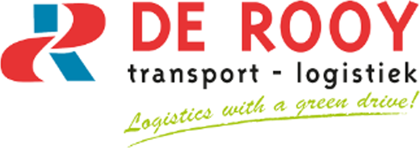

// De Rooy Transport · internship · 2025
A machine learning solution for logistics optimisation
Unexpected pickups make up over 82% of De Rooy's daily assignments. I built a multi-model pipeline that forecasts where, when, and how large those pickups will be, wired into a Streamlit dashboard that planners use to cut distance, cost, and CO2.
Working with De Rooy Transport, I designed a predictive system for the challenge of unexpected pickups. It uses a multi-model machine learning pipeline to forecast pickup details with high accuracy and integrates with the PTV route-planning software the planners already use.
Each part of the prediction is handled by the model best suited to it:
Working with Dominik was a fun and valuable experience. He did not just put in the work, he showed that he understands what matters: practical value, smart use of data, and a fresh perspective on how things can be improved. We are very happy with the result and his contribution to De Rooy.
Nanko Hensen, De Rooy Transport & Logistics
Sample tests in May 2025 showed savings of several hundred kilometres per day, with matching reductions in fuel cost, CO2, and planning time. Scaled across daily operations, that adds up to as much as 1,500 km and 1,500 euro saved per day for the company. The system was designed to roll into daily routes from August 2025, with a clear path to expand across the wider Benelux network.
The work was also featured in AI in de logistieke sector, a logistics-industry whitepaper by LSB, with a two-page case study on the project I delivered for De Rooy.